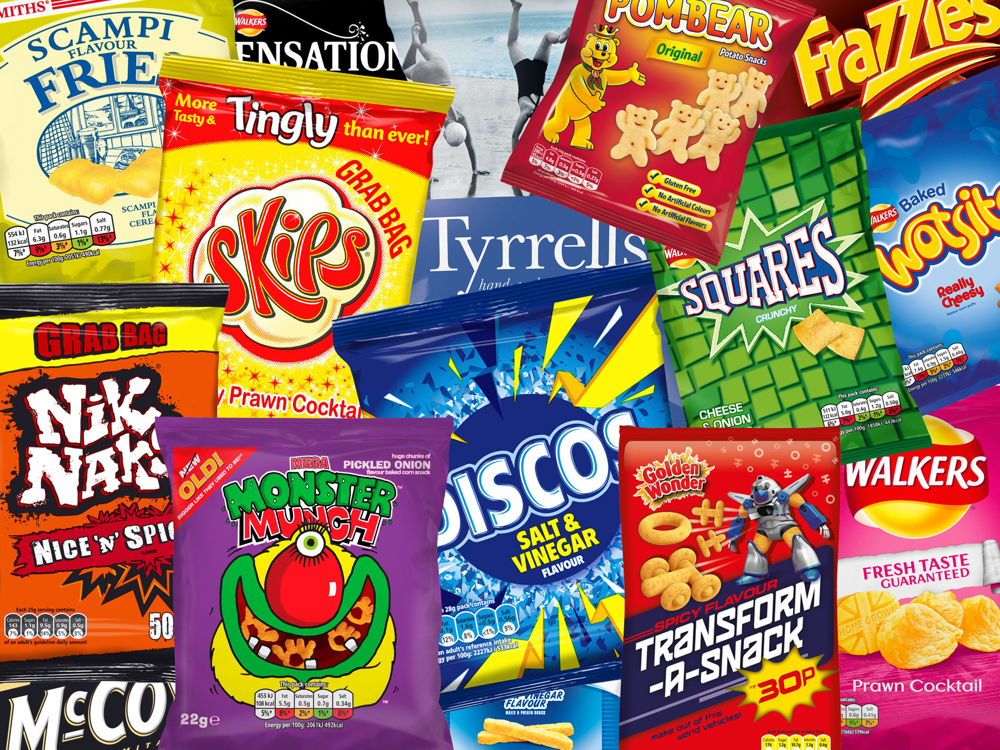
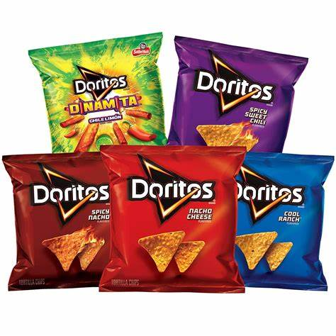

Best Crisps in Britain


How were crisps invented?
Crisps are reported to be the result of a chef's rebellion. A diner
at Saratoga hotel in 1853 kept sending back his chips to the kitchen complaining that
they were not thin enough. Eventually the chef had enough. He cut wafer-think slices of potato, cooked them
in oil until crisp, and sent them out to his fussy customer to teach him a lesson. But the joke
backfired because the diners loved them.Crisps first came to Britain from frances in the early part of 20th century.
- Statistics reveal that 69 per cent of children’s lunchboxes have crisps in them.
- When Fredric Baur of Cincinnati died aged 89 in 2008, his cremated remains were put in a Pringles can and put in his grave according to his wishes...
- Salt & Vinegar, Barbecue and Cheese & Onion were the first seasoned chips produced in the world.
- Due to the high amount of salt in crisps, it is always associated with various health issues such as obesity and high blood pressure.
- The people who live in Canada serve crisps with ketchup, dill pickle, vinegar, salt, onion and sour cream.